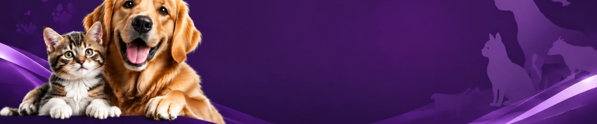

The Animal Welfare Act 2015 [Act 772], together with its regulations and Animal Welfare Codes of Practice, provides a legal and practical framework for protecting animals in Malaysia. These documents establish requirements for animal-related activities, including licensing, improvement notices, pet boarding, animal breeding, exhibitions, rescue and rehabilitation, quarantine, sale, slaughter, disposal and transportation. They also guide individuals and organisations in maintaining proper standards of care, preventing cruelty and neglect, and ensuring that animals are managed responsibly, safely and humanely.
Give your pets love, proper identification, training, exercise and responsible daily care.
Provide proper nutrition, clean drinking water and a safe and comfortable place for animals to stay.
Regular health examinations, vaccinations and medical treatment help animals remain healthy.
Recognise signs of animal abuse or neglect and report suspected cruelty to the appropriate authority.
Speak up and help protect animals. Report cases of animal cruelty or neglect through the official Department of Veterinary Services Malaysia online complaint portal.
Report Animal Cruelty